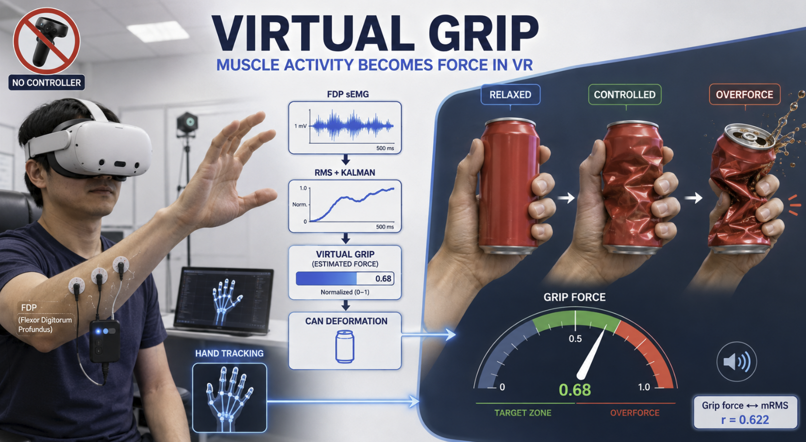

Sensing the Unseen Grip: sEMG-Based Interaction Beyond Hand Tracking for Controller-Free Isometric Force Input in Virtual Reality
Explores sEMG as an input channel for controller-free isometric force interaction in VR, extending virtual grip interaction beyond what hand tracking alone can capture.